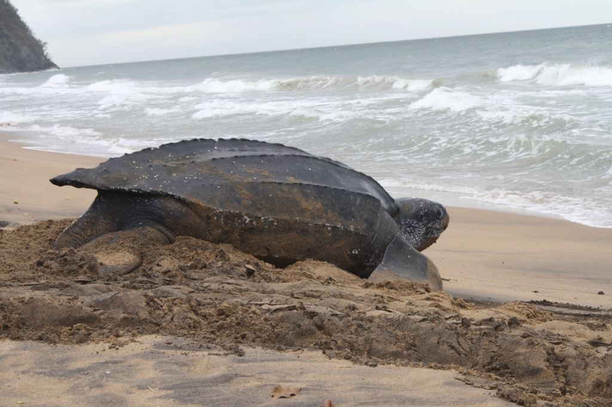

Características
As tartarugas marinhas son répteis qe existem há mais de 150 milhões de anos.
Teriam evoluído a partir das tartarugas de água doce. A carapaça das tartarugas marinhas é
mais achatada, o que as deixam mais leves e hidrodinâmicas. Possuem visão, olfato e audição
desenvolvidos e aletas para nadar.

Espécies
Existen 07 espécies de tartarugas marinhas, das quais 05
espécies estão presentes nas praias do Brasil. Caretta caretta (tartaruga cabeçuda), Chelonia mydas (tartaruga verde), Eretmochelys imbricata
(tartaruga de pente), Dermochelys coriacea (tartaruga de couro) e Lepidochelys olivacea
(tartaruga de oliva)

Reprodução
As fêmeas saim nas praias para colocar seus ovos.
A maior parte das ocorrências reprodutivas está concentrada nas regiões
tropicais e subtropicais. No Brasil, a temporada de desovas, de forma geral,
vai de setembro a abril nas praias do continente e de dezembro a junho nas ilhas oceânicas.

Projetos
Atualmente, todas as espécies de tartarugas marinhas estão
incluídas nas listas de espécies ameaçadas de extinção. Nos diferentes países
existem projetos que trabalham na gestão e conservação destas espécies.No Brasil
encontra-se o Projeto Tamar cirado na década de 80